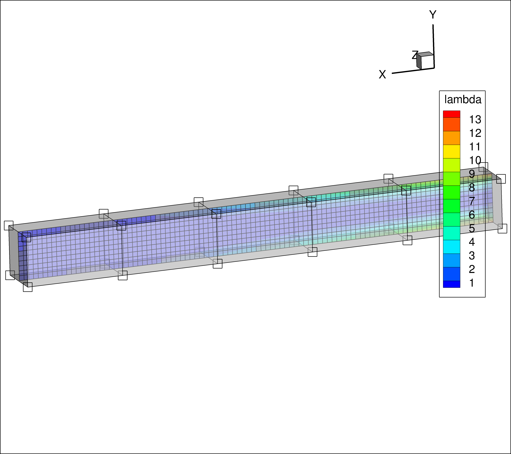
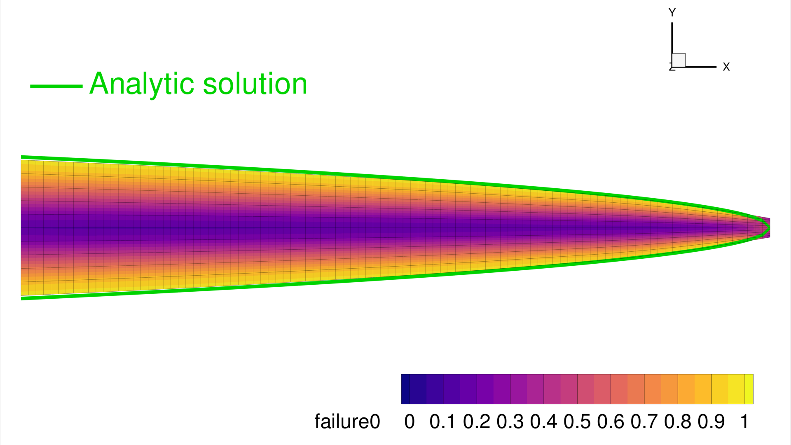

2D Beam Shape Optimization with MACH¶
Note
The script for this example can be found under the examples/beam_shape_opt/shape_opt.py file.
This example demonstrates TACS structural shape optimization using the MACH interface. It considers the same cantilevered beam with a tip shear load as the Beam optimization with MPhys example, but differs in two key ways:
The beam is modeled in 2D using shell elements rather than 1D beam elements,
The geometry is optimized by physically warping the finite-element mesh via a free-form deformation (FFD) volume rather than by adjusting 1D cross-sectional properties.
The beam is discretized using 1001 shell elements along its span and depth.
The optimization problem is:
Minimize the mass of the beam with respect to the depth of the cross-section along the span, subject to a maximum stress constraint dictated by the material's yield stress.
In order to change the shape of the FEM, we use a FFD volume parameterization scheme provided by the pyGeo library. TACS MACH module is used to link the static problem with pyGeo's FFD volume parameterization.
The figure below shows the initial (unoptimized) beam with the von Mises failure contour and the FFD box with its control points encapsulating the structure:
{kind=link}

Each spanwise control point section will be parameterized in such a way that the depth of the beam can be optimized at each station.
As was shown in Beam optimization with MPhys example an analytic solution for the optimal spanwise depth profile can be derived and is given below:
The optimization will be driven by SLSQP via pyoptsparse, with gradients supplied by
TACS' adjoint solver through the StructProblem wrapper.
First, import required libraries:
import numpy as np
import os
from pygeo import DVGeometry
from pyoptsparse import Optimization, OPT
from tacs.mach import StructProblem
from tacs import pyTACS
from tacs import elements, constitutive, functions
Next, define the problem parameters and file paths:
bdf_file = os.path.join(os.path.dirname(__file__), "Slender_Beam.bdf")
ffd_file = os.path.join(os.path.dirname(__file__), "ffd_8_linear.fmt")
# Beam thickness
t = 0.01 # m
# Length of beam
L = 1.0 # m
# Material properties
rho = 2780.0 # kg /m^3
E = 70.0e9 # Pa
nu = 0.0
ys = 420.0e6
# Shear force applied at tip
V = 2.5e4 # N
Now, define the element callback function used to setup TACS element objects and design variables:
def element_callback(dvNum, compID, compDescript, elemDescripts, specialDVs, **kwargs):
# Setup (isotropic) property and constitutive objects
prop = constitutive.MaterialProperties(rho=rho, E=E, nu=nu, ys=ys)
con = constitutive.IsoShellConstitutive(prop, t=t, tNum=-1)
refAxis = np.array([1.0, 0.0, 0.0])
transform = elements.ShellRefAxisTransform(refAxis)
elem = elements.Quad4Shell(transform, con)
return elem
Create and initialize the pyTACS assembler:
FEAAssembler = pyTACS(bdf_file)
FEAAssembler.initialize(element_callback)
Set up the FFD and geometric design variables using pyGeo's DVGeometry:
DVGeo = DVGeometry(fileName=ffd_file)
# Create reference axis
nRefAxPts = DVGeo.addRefAxis(
name="centerline", alignIndex="i", yFraction=0.5, axis=None
)
# Set up global design variables
def depth(val, geo):
for i in range(nRefAxPts):
geo.scale_y["centerline"].coef[i] = val[i]
DVGeo.addGlobalDV(
dvName="depth",
value=np.ones(nRefAxPts),
func=depth,
lower=1e-3,
upper=10.0,
scale=20.0,
)
Create the static problem and add functions of interest:
staticProb = FEAAssembler.createStaticProblem("tip_shear")
# Add TACS Functions
staticProb.addFunction("mass", functions.StructuralMass)
staticProb.addFunction(
"ks_vmfailure", functions.KSFailure, safetyFactor=1.0, ksWeight=100.0
)
# Add forces to static problem
staticProb.addLoadToNodes(1112, [0.0, V, 0.0, 0.0, 0.0, 0.0], nastranOrdering=True)
Wrap the static problem with the StructProblem using the MACH interface.
Passing DVGeo here registers the structural node coordinates with the FFD volume;
nodes are updated automatically before each solve when design variables change:
structProb = StructProblem(staticProb, FEAAssembler, DVGeo=DVGeo)
Define the objective and constraint evaluation function:
def structObj(x):
"""Evaluate the objective and constraints"""
funcs = {}
structProb.setDesignVars(x)
DVGeo.setDesignVars(x)
structProb.solve()
structProb.evalFunctions(funcs)
structProb.writeSolution()
if structProb.comm.rank == 0:
print(x)
print(funcs)
return funcs, False
Define the sensitivity evaluation function.
evalFunctionsSens() folds in the DVGeo
chain-rule term automatically, producing sensitivities keyed by the geometric DV name
("depth"). The structural DV sensitivity (keyed "struct") is
popped out because it is not used in the pyoptsparse optimization problem:
def structSens(x, funcs):
"""Evaluate the objective and constraint sensitivities"""
funcsSens = {}
structProb.evalFunctionsSens(funcsSens)
for func in funcsSens:
funcsSens[func].pop("struct")
return funcsSens, False
Set up the optimization problem using pyoptsparse.
addVariablesPyOpt() registers the TACS
structural design variables (none in this case, since tNum=-1), and
DVGeo.addVariablesPyOpt registers the FFD "depth" DVs.
The stress constraint is added as a nonlinear inequality using the KS failure aggregation:
# Now we create the structural optimization problem:
optProb = Optimization("Mass min", structObj)
optProb.addObj("tip_shear_mass")
structProb.addVariablesPyOpt(optProb)
DVGeo.addVariablesPyOpt(optProb)
optProb.addCon("tip_shear_ks_vmfailure", upper=1.0)
optProb.printSparsity()
opt = OPT(
"SLSQP",
options={
"MAXIT": 100,
"IPRINT": 1,
"IFILE": os.path.join(os.path.dirname(__file__), "SLSQP.out"),
},
)
Finally, run the optimization:
# Finally run the actual optimization
sol = opt(optProb, sens=structSens, storeSens=False)
Results¶
The optimization minimizes the beam mass while keeping the KS failure index below 1.0. The converged depth profile decreases from root to tip, matching the analytical solution \(d(x) = \sqrt{6V(L-x)/(t\,\sigma_y)}\).
{kind=link}
